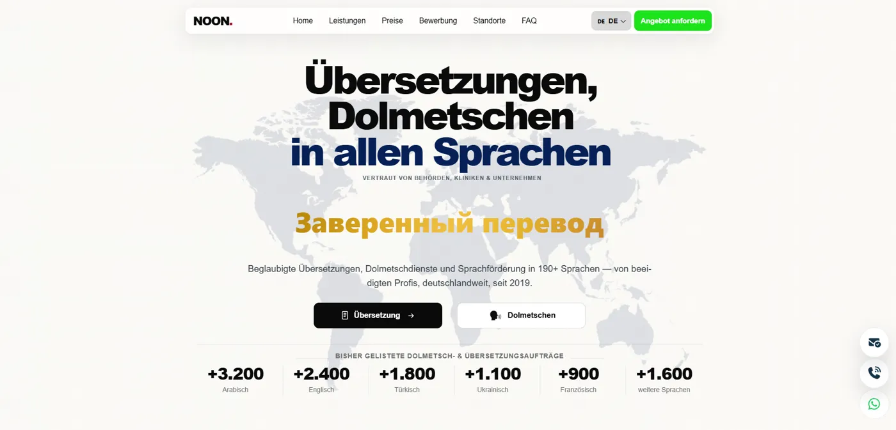

Noon Dolmetscher & Übersetzungsbüro
Sole engineer and technical SEO lead
Rebuilt a sworn-translation agency's website (8 offices across Germany) from Squarespace/Wix into a fast React + Vite app with serverless APIs, then took over its search visibility.
- 7 languages incl. Arabic RTL, prerendered to static HTML with hreflang, canonical and JSON-LD
- 247-URL sitemap: office, city, language and document landing pages written for search intent
- 301 migration of all legacy URLs; 251 "not indexed" pages fixed and validated in Search Console
- GDPR-compliant analytics dashboard, quote form with attachments, bi-weekly DE/AR SEO reports